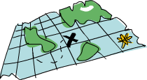

|  |
// Returns a new slice containing all strings in the slice that satisfy the predicate f.
func Filter(vs []string, f func(string) bool) []string {
vsf := make([]string, 0)
for _, v := range vs {
if f(v) {
vsf = append(vsf, v)
}
}
return vsf
}
// Returns a new slice containing the results of applying the function f
// to each string in the original slice.
func Map(vs []string, f func(string) string) []string {
vsm := make([]string, len(vs))
for i, v := range vs {
vsm[i] = f(v)
}
return vsm
}
|